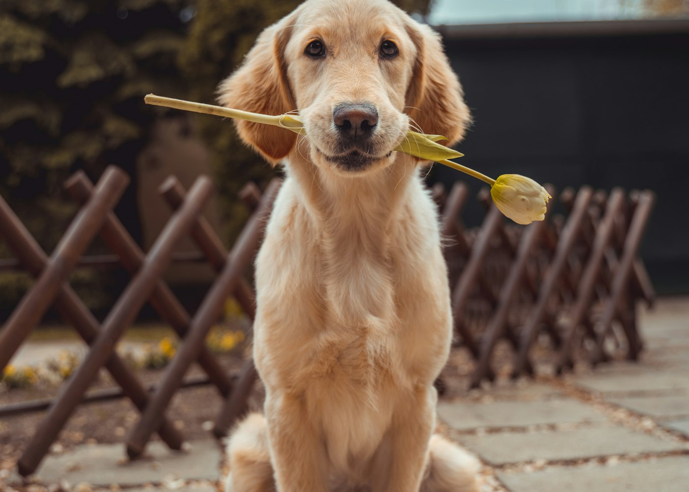
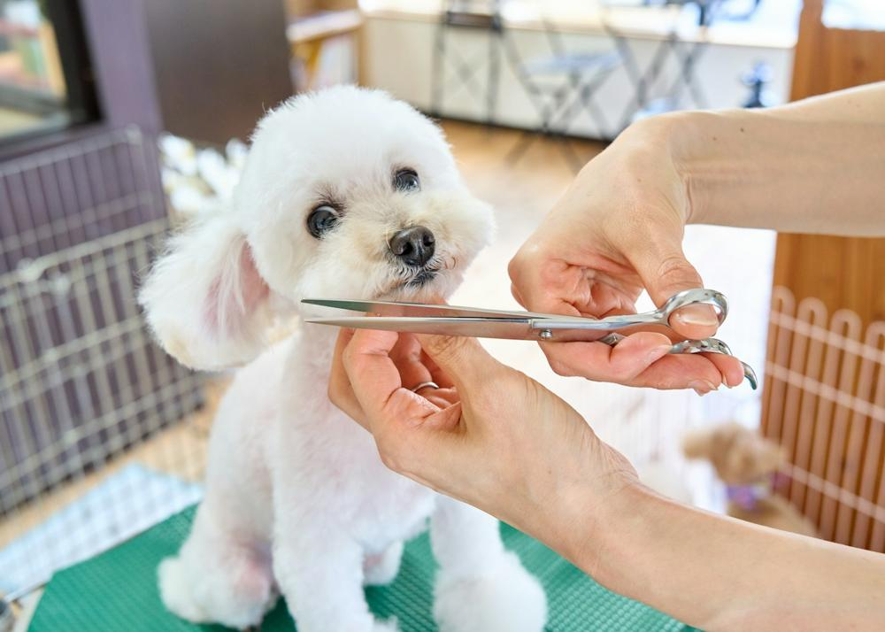
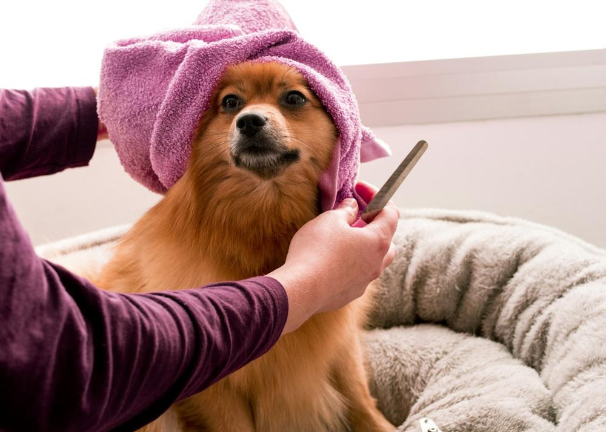
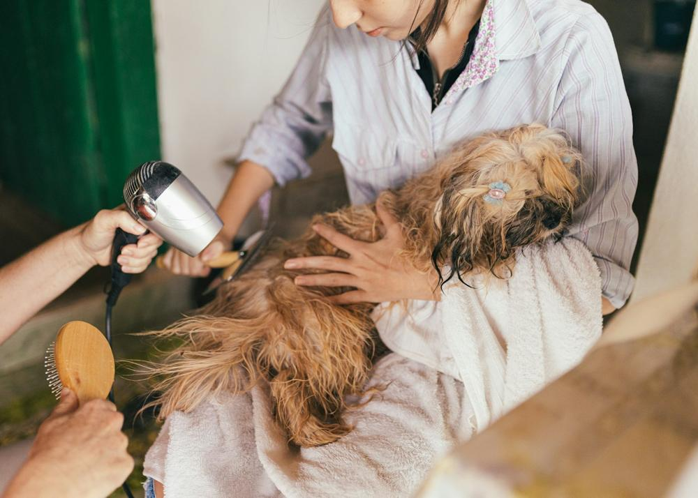

Banho
Cheirinho bom e muito carinho.
CUIDADO DE VERDADE PARA QUEM VOCÊ AMA
Banho, tosa e cuidados para seu melhor amigo se sentir em casa — mesmo fora dela.
Cuidados
Banho, tosa e bem-estar no ritmo de cada pet, com produtos adequados a cada pelagem.
Cheirinho bom e muito carinho.
Conforto com estilo para cada pelagem.
Cuidado extra para pelos saudáveis.
Busca e entrega com segurança.
Brincadeiras e companhia durante o dia.
Acolhimento também na sua viagem.
Nossa essência
No AuMigos, o atendimento respeita o tempo de cada pet. Nossa equipe transforma higiene e bem-estar em uma experiência leve, segura e cheia de afeto.
Antes / depois
Deslize para comparar o efeito visual demonstrativo.

Comparação de tratamento visual sobre a mesma fotografia. Não representa resultado real de serviço.
Dia de AuMigos
Os clientes mais fofos da cidade.




Como funciona
Nome, porte e o cuidado desejado.
Organizamos a visita com você.
Você recebe notícias durante o cuidado.
Em destaque
Quatro banhos programados para manter tudo em dia.
Brincadeiras supervisionadas e descanso.
Bia, Bruno e Natália cuidam de cada pet pelo nome.
Quem viveu, recomenda · 4.9/5
“A Lola entra abanando o rabo e sai ainda mais feliz. Isso diz tudo.”
Fernanda, tutora da Lola
“O Thor tem medo de secador e a equipe teve toda a paciência.”
“O Táxi Dog salvou minha rotina.”
Antes de começar
Sim, mediante agendamento e avaliação do perfil do gatinho.
Atendemos bairros selecionados; consulte disponibilidade ao agendar.
Vamos conversar
Conte sobre seu pet. Confirmamos o horário pelo WhatsApp.
Conversar no WhatsApp ↗